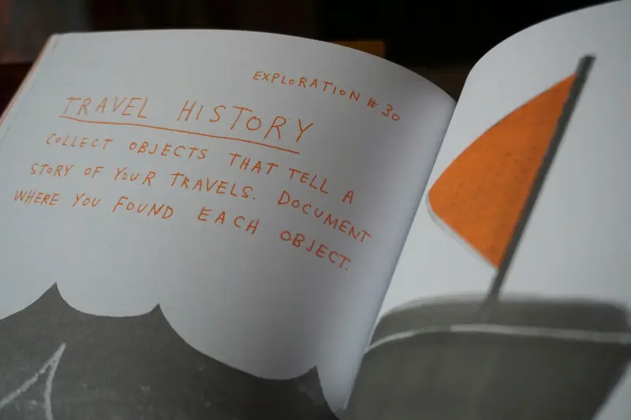
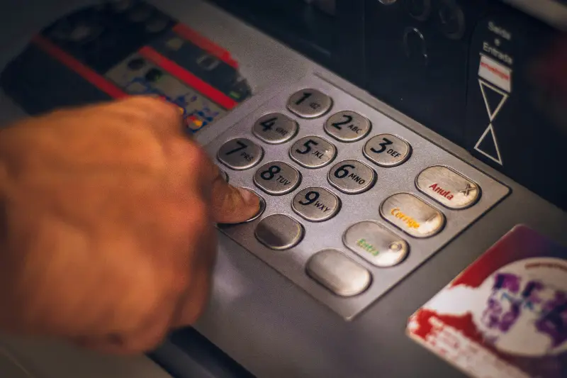

Documentos indispensables para viajes internacionales
Viajar al extranjero requiere una preparación adecuada, especialmente en lo que respecta a la documentación. Contar con los documentos correctos no solo facilita tu entrada a otros países, sino que también te protege ante cualquier eventualidad durante tu viaje.
Pasaporte
El documento de identidad internacional más importante para viajar.
Visa
Permiso de entrada requerido por algunos países.
Boletos
Confirmación de tus vuelos de ida y regreso.
Seguro
Protección para emergencias durante tu viaje.
Documentos Requeridos
Para tramitar tu pasaporte, necesitarás presentar los siguientes documentos:
- Acta de nacimiento original
- Identificación oficial vigente
- CURP
- Comprobante de domicilio reciente
Requisitos para obtener tu pasaporte por primera vez
Obtener tu pasaporte por primera vez es un proceso importante que requiere atención a los detalles. Asegúrate de tener todos los documentos necesarios para evitar retrasos en tu trámite.
Acta de nacimiento
Original y en buen estado, sin tachaduras, enmendaduras o deterioro. Debe ser legible y tener una antigüedad no mayor a un año desde su fecha de expedición.
- Formato actualizado con código QR
- Sin alteraciones ni tachaduras
- Expedida por el Registro Civil
Identificación oficial
Debe ser vigente y contener fotografía, firma y datos personales que coincidan con tu acta de nacimiento. Las opciones aceptadas incluyen:
- Credencial para votar (INE/IFE)
- Cédula profesional con fotografía
- Cartilla de Identidad del Servicio Militar
Comprobante de domicilio
Documento que acredite tu lugar de residencia actual, con una antigüedad no mayor a tres meses desde su fecha de emisión. Puede ser:
- Recibo de luz, agua, teléfono o predial
- Estado de cuenta bancario
- Constancia de residencia emitida por autoridad local
Proceso de renovación
La renovación de tu pasaporte es un trámite más sencillo que la primera expedición, pero igualmente requiere seguir ciertos pasos y cumplir con requisitos específicos.
Paso 1
Preparar documentos
- Pasaporte anterior (aunque esté vencido)
- Identificación oficial vigente
- Comprobante de pago de derechos
Paso 2
Realizar el pago
- Consulta el costo actual según vigencia
- Pago en banco o en línea
- Conserva tu comprobante original
Paso 3
Tomar fotografía
- Fondo blanco, sin lentes ni accesorios
- Expresión facial neutra
- Ropa oscura con cuello
Paso 4
Recibir pasaporte
- Verificación de datos personales
- Firma de recepción
- Recomendaciones de uso y cuidado
Documentación especial
Menores de edad
Requisitos especiales y presencia de padres
Adultos mayores
Descuentos y documentación alternativa
Requisitos por destino
Europa
Sin visa para turismo
Asia
Varía por país
América
Requisitos específicos